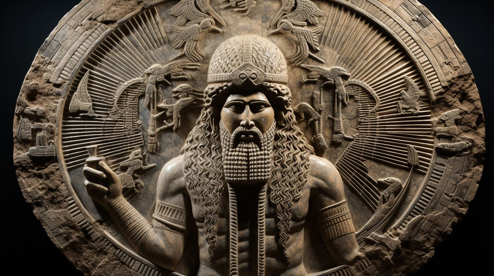
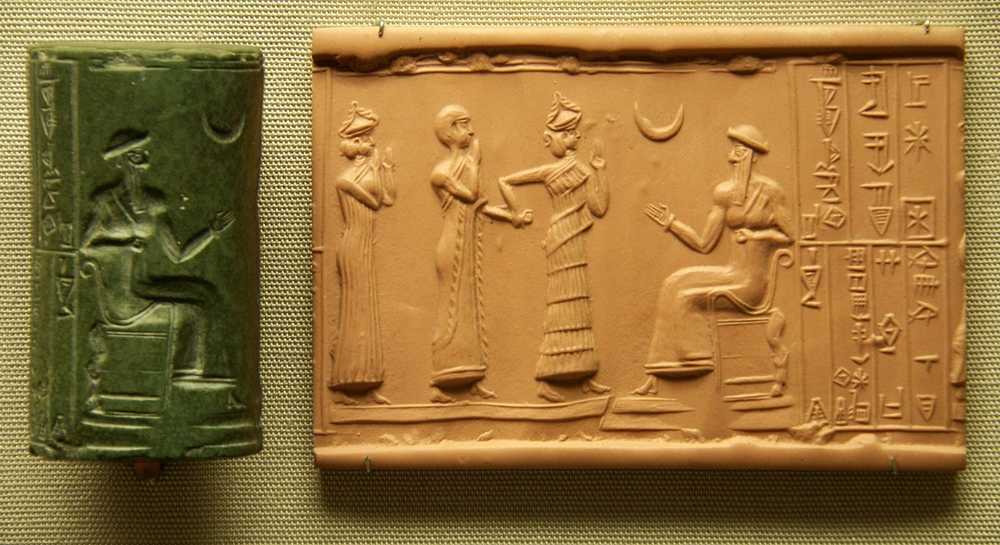

Nannar (Sin)
Nannar (/sin/) or Suen (Akkadian:𒀭𒂗𒍪) also known as Nanna was the Mesopotamian god representing the moon. While these two names originate in two different languages, respectively Akkadian and Sumerian, they were already used interchangeably to refer to one deity in the Early Dynastic period. They were sometimes combined into the double name Nanna-Suen. A third well attested name is Dilimbabbar (𒀭𒀸𒁽𒌓). Additionally, the moon god could be represented by logograms reflecting his lunar character, such as d30 (𒀭𒌍), referring to days in the lunar month or dU4.SAKAR (𒀭𒌓𒊬), derived from a term referring to the crescent. In addition to his astral role, Sin was also closely associated with cattle herding. Furthermore, there is some evidence that he could serve as a judge of the dead in the underworld.
Names
While it is agreed that the two primary names of the Mesopotamian moon god, Nanna and Sin (Suen), originated in two different languages, respectively Sumerian and Akkadian, it is not possible to differentiate between them as designations of separate deities, as they effectively fully merged at an early date. Gebhard J. Selz [de] points out this phenomenon is already attested in sources from Lagash from the Early Dynastic period, where the name Nanna does not appear, and Sin is the form used in both Sumerian and Akkadian context. The process of conflation presumably started prior to the invention of cuneiform.
Nanna
The precise etymology of the name Nanna is unknown,[3] though it is agreed that it is not a genitive construction.[11] It is first attested in the Uruk period.[12] In earliest cuneiform texts from Uruk and Ur it was written as (d)LAK-32.NA, with NA possibly serving as a phonetic complement.[3] The name of the city of Ur (Urim) was accordingly written as LAK-32.UNUGki (𒋀𒀕𒆠), "residence of Nanna", per analogy with toponyms such as Zabalam, INANNA.UNUGki.[1] In later periods LAK-32 coalesced with ŠEŠ (the ideogram for "brother"), and Nanna's name came to be written as dŠEŠ+KI or dŠEŠ.KI, though phonetic spellings such as na-an-na are attested too, for example as glosses in lexical lists.[3]Sin
In Akkadian the moon god was called Sin (Sîn) or Suen (Su’en).[1] The former is the standard reading of the name from the Old Babylonian period onward, while the latter was presumably the older uncontracted pronunciation.[14] The etymology of this name remains uncertain.[15] One of the inscriptions of Gudea from the third millennium BCE refers to Sin as a god "whose name nobody can explain", which might be an indication that his name was already unclear and a subject of scribal speculation during his reign.[16]Icongraphy
Despite Sin's popularity documented in textual sources, depictions of him are not common in Mesopotamian art.[75] His most common attribute was the crescent. [3][76] In accordance with the appearance of the new moon in the latitude of Mesopotamia, it was consistently represented as recumbent.[77] It was frequently compared to bull horns[3] and to a barge.[44] On seals, Sin could be depicted with the crescent either placed on his tiara[75] or atop a standard he held. [78] It was also used to represent him on kudurru, decorated boundary stones. [79] It consistently occurs in the upper section of such objects, next to symbols of Shamash and Ishtar, though their exact arrangement can vary.[80] A survey of 110 stones or their fragments indicated that this trio of deities is depicted on all known kudurru.[79] Aniconic portrayals of Sin as the lunar crescent also predominate in Neo-Assyrian and Neo-Babylonian art.[81] Furthermore, the logogram dU4.SAKAR (𒀭𒌓𒊬) which could be used to write his name was derived from a term referring to the crescent.[3]
Associations with other deities
Enlil and Ninlil were usually regarded as Sin's parents.[91] It has been argued that an Early Dynastic text from Abu Salabikh already refers to Enlil and Ninlil as his parents, though an alternate view is that he oldest certain evidence only goes back to the reign of Ur-Nammu of the Third Dynasty of Ur.[92] It has been argued that in this period he might have started to be viewed as a son of Enlil for political reasons.[93] The compilers of the god list An = Anum apparently did not acknowledge this tradition directly, as in contrast with Ninurta Sin does not appear in the section focused on Enlil and his family.[92]Wife and Children
Sin's wife was Ningal.[9] They are already attested as a couple in Early Dynastic sources, [100] and they were consistently paired with each other in all regions of Mesopotamia.[101] Derivatives of Ningal were associated with local moon gods in the Ugaritic, Hurrian and Hittite pantheons.[9] However, the old proposal that Hurrians, and by extension Hittites and inhabitants of Ugarit, received her from Harran is regarded as unproven, as she does not appear in association with this city in any sources from the second millennium BCE.[102] She is also absent from Luwian sources pertaining to the worship of Sin of Harran in the first millennium BCE.[103] The best attested children of Sin were Utu (Shamash) and Inanna (Ishtar).[9] The connection between these three deities depended on their shared astral character, with Sin representing the moon and his children, who could be identified as twins - the sun and Venus.As Head Of The Pantheon
A number of sources attest the existence of a tradition in which Sin was regarded as the sole head of the Mesopotamian pantheon or a deity equal in rank to the traditional kings of the gods, Anu and Enlil.[64] According to Wilfred G. Lambert, most of the evidence for this view postdates the reign of Meli-Shipak II, and indicates it might have been particularly popular in Harran.[65] An Old Babylonian literary composition written in Sumerian describes Sin as the head of the divine assembly (Ubšu’ukkin),with Anu, Enlil, Inanna, Utu, Enki and Ninhursag serving as his advisers.[66] Two of his titles known from the god list An = Anum, dUkkin ("the assembly") and Ukkin-uru ("mighty assembly"), might reflect this portrayal.[52] Some Old Babylonian theophoric names might also be connected to the view that Sin was the head of the pantheon, namely Sîn-bēl-ili ("Sin is the lord of the gods"), Sîn-šar-ili ("Sin is the king of the gods") or Sîn-il-ili ("Sin is god of the gods").[67] Lambert notes that while similar names invoking other gods, for example Shamash and Adad, are also known, Sîn-bēl-ili is ultimately the most common.
Worship
Sin was recognized as a major deity all across ancient Mesopotamia.[151] His status was already high in the earliest periods to which the history of the Mesopotamian pantheon can be traced.[152] It is presumed that Sin was actively worshiped in most of the major cities of the region, with remains of multiple temples dedicated to him identified during excavations both in Babylonia and in Assyria.[153]